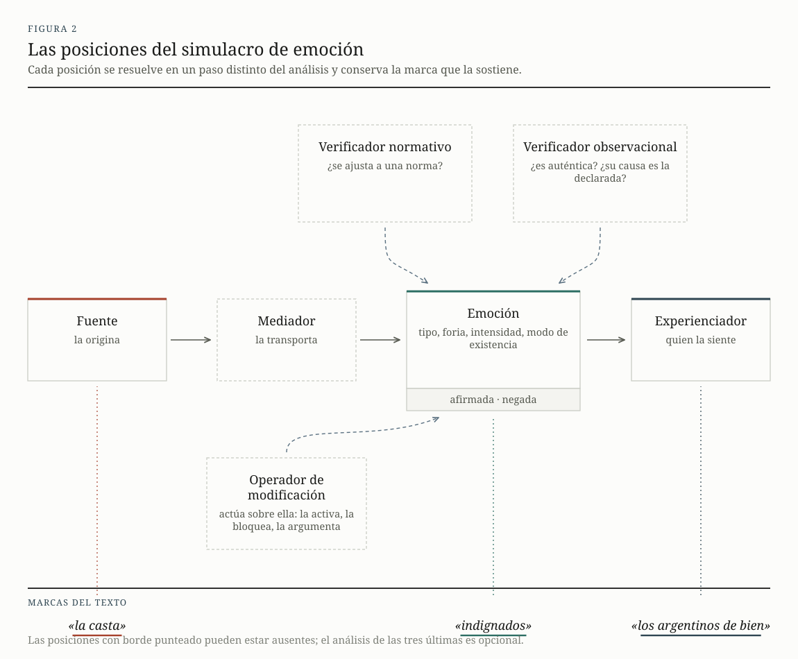

El enfoque
Las categorías que usa EmoParse para hacer las inferencias no salen de una taxonomía de emociones básicas ni de un modelo entrenado sobre juicios ajenos. Salen de un conjunto de tradiciones del análisis del discurso, la lingüística, la semiótica y la retórica, traducidas a campos, listas de valores y pasos de un procedimiento.
1La emoción como efecto de sentido
Una cosa es el estado corporal y afectivo de una persona, con su materialidad neurobiológica. Otra es lo que ocurre cuando alguien lee «el Papa está enojado» y le asigna «enojo» a un actor. Esa asignación opera sobre marcas observables y produce una emoción discursiva: un efecto que se produce cuando una configuración de marcas, realizada en un texto, es reconocida, por quien lee, como portadora de cierta cualificación afectiva.
Cuando un modelo de lenguaje identifica una emoción en un texto hace exactamente esa operación. Su salida es una emoción discursiva, y vale como hipótesis de lectura sobre una configuración de marcas. EmoParse toma esa condición como punto de partida y organiza toda su arquitectura alrededor de ella.
Un mismo enunciado, «acaban de matar al presidente», admite lecturas afectivas opuestas según dónde circule. Esa divergencia integra el fenómeno, y por eso el sistema la mide en lugar de suprimirla.
Entonces, si dos analistas leen distinto el mismo pasaje, esa diferencia no es ruido alrededor de un valor verdadero que habría que despejar: forma parte de aquello que se está estudiando . El circuito de evaluación del sistema, que mide el acuerdo entre anotadores humanos antes de medir el acierto del modelo, está construido sobre esa premisa.
2Qué se puede observar
Los procesos discursivos se dejan distinguir en tres niveles. El primero son las operaciones de producción: los procesos cognitivos, sociales y culturales que dan origen a un discurso, que ningún observador ve directamente. El segundo son las configuraciones materiales: los textos, los enunciados, las marcas disponibles para el análisis. El tercero son los efectos, las reorganizaciones que esas configuraciones producen al ser reconocidas.
EmoParse trabaja sobre el segundo nivel y, a partir de él, formula hipótesis sobre el tercero. No accede al primero y no supone ese acceso. Cuando el sistema informa que un colectivo está indignado, está informando que ciertas marcas de la superficie del texto habilitan esa lectura, y deja las marcas a la vista.
3El simulacro de emoción
La unidad de trabajo del sistema es el simulacro de emoción: la forma esquemática que adquiere la reconstrucción de una emoción cuando alguien la efectúa a partir de un texto. Tiene la forma de un conjunto de posiciones articuladas entre sí. Hay quien experimenta la emoción, hay un tipo de emoción, hay algo que la desencadena, puede haber algo que la transporte, algo que la evalúe y algo que intente modificarla; y hay un repertorio de marcas que sostienen todo eso.
Esa estructura interna es la que vuelve el análisis instrumentable. Cada posición del esquema puede interrogarse por separado, con sus propias instrucciones y sus propios criterios de control. El recorrido de etapas del programa es la traducción de ese esquema a una secuencia de tareas.

Las posiciones
- Experienciador
- El actor al que se le atribuye el proceso afectivo. Una emoción tiene siempre uno solo: si dos actores sienten lo mismo, el sistema desdobla la emoción en dos, cada una con su experienciador, porque cada uno puede sentirla en un grado distinto de realización.
- Fuente
- Aquello que la origina. A diferencia del experienciador, puede combinar entidades sin multiplicarse: «libertarios, radicales y macristas» desencadena una sola indignación con tres referentes resueltos juntos.
- Mediador
- Aquello que la vehiculiza entre su origen y quien la siente: el propio discurso del orador, una voz citada, un documento, un objeto, un espacio, una acción. Cuando el vínculo es directo, queda marcado como ausente.
- Verificadores
- Las operaciones por las que el discurso evalúa la emoción. Una evalúa su adecuación a una norma, para legitimarla («está bien indignarse por esto») o para rechazarla («no deberías estar triste por eso»). La otra evalúa su autenticidad o la veracidad de su causa («no parecías enojado», «lo que en realidad te molesta es otra cosa»).
- Operador de modificación
- La operación dirigida a actuar sobre la emoción de alguien: argumentar a favor o en contra de ella, proyectar un horizonte afectivo deseable, buscar activarla o bloquearla.
- Polaridad
- Si la emoción se predica afirmada o negada. Decir que un actor «no siente miedo» inscribe el miedo en el discurso, con efectos distintos de los de una afirmación directa, y por eso se registra aparte.
4La marca y lo que localiza
Las marcas que el análisis identifica no son la emoción. La localizan: al ser reconocidas, dan lugar a un efecto de sentido afectivamente cualificado. La distinción fija qué puede aspirar a detectar un procedimiento automático, que son marcas y configuraciones, y qué solo puede reconstruir a partir de ellas.
El sistema registra por separado, para cada emoción, el referente inferido y su marca literal. En «nosotros sabemos lo que sufrimos», el experienciador inferido puede ser «los argentinos» y la marca es «nosotros». Ese doble registro permite después corregir la inferencia sin perder el anclaje, y buscar en el corpus por una cosa o por la otra.
De qué manera una emoción está sostenida en el texto también se clasifica, en ocho tipos: por un sustantivo, por un adjetivo, por un verbo psicológico, por un indicador cognitivo, por un indicador de comportamiento, por un indicador de valoración, por la descripción de una situación, o por una situación que el discurso plantea para inducir la emoción en quien escucha. La clasificación obliga a justificar cada emoción por su sostén concreto, y de ella se deriva de manera automática el modo de semiotización: una emoción está dicha cuando se la nombra, mostrada cuando se la deja ver por indicios y sostenida cuando surge de la descripción de una situación.1
5Grillas explícitas
Parte de los campos toman su valor de una lista cerrada. La foria admite cuatro valores, el modo de existencia cuatro, el aspecto seis. Esas listas se declaran de antemano y el modelo de lenguaje no puede devolver nada fuera de ellas: la restricción se aplica sobre la generación misma, palabra por palabra, así que una salida inválida resulta imposible antes que improbable.2
Así, la grilla categorial con la que el sistema lee queda explícita, versionada y discutible. Un clasificador entrenado sobre ejemplos anotados también tiene una grilla, pero sedimentada de manera implícita en sus parámetros, y ahí no se la puede leer ni objetar. Acá se la puede abrir en un archivo de texto, discutirla y modificarla, y la modificación queda registrada junto con los resultados que produjo.
Las listas de emociones, los rasgos semánticos de los actores, las reglas de coherencia y las
indicaciones de lectura que reciben los modelos están en la carpeta knowledge/ del
repositorio, en archivos de texto legibles. Quien analice un corpus de literatura fantástica
puede habilitar actores con rasgos distintos, como «animal», «deidad» o «espacio», sin escribir
una línea de código.
6Género y tipo de discurso
Un género es un tipo relativamente estable de enunciado, con regularidades temáticas, de estilo y de composición, sedimentadas históricamente. En EmoParse se traduce en una ficha que declara cómo varía el análisis para esa clase de texto: en qué unidades se corta, qué posiciones de destinatario son válidas, qué instrucciones se usan.
El sistema incorpora dos géneros y admite agregar otros. En el discurso_presidencial
(equivalente, en su estructura, a muchos otros discursos políticos tradicionales), el corte es por
frase y las posiciones de destinatario son tres, tomadas del
análisis del discurso político
: aquel que comparte las creencias del enunciador y recibe el refuerzo, aquel indeciso al
que se busca persuadir, y el adversario con quien se polemiza. En el género tuit el
corte es por post y las posiciones dependen del
tipo de discurso
que se identifique en cada caso.
Analizar posts con la grilla de un discurso presidencial impondría condiciones de lectura ajenas al material. Esa es la razón de que el género sea un parámetro declarado y no un supuesto del programa.
7Procedencia
Las nociones reunidas provienen de la semiótica narrativa y de las pasiones, de la semiótica tensiva, de la teoría de las operaciones enunciativas, de la propuesta semiótica y comunicacional de Eliseo Verón, de la retórica y los estudios de la argumentación, de la teoría del actor-red, de las propuestas sobre género y tipo de discurso, de los estudios sobre audiencias en redes y de la filosofía de la individuación de Simondon.
El glosario reúne cada categoría con su procedencia, su sentido dentro del sistema y la forma en que se volvió computable. El desarrollo extenso del enfoque y de la prueba del sistema está en este trabajo, y la fundamentación de las tipologías de destinatario para el dominio digital, en este otro.
Notas
- La derivación es automática: las tres primeras configuraciones dan una emoción dicha; las tres siguientes, mostrada; las dos últimas, sostenida. Así, la forma en que el texto sostiene la emoción y el modo en que la significa no pueden contradecirse. ↩
- Un modelo de lenguaje produce texto eligiendo una palabra por vez entre todas las posibles. La restricción actúa sobre esa elección: en el punto donde el campo espera un valor de foria, las únicas continuaciones habilitadas son las cuatro de la lista. ↩